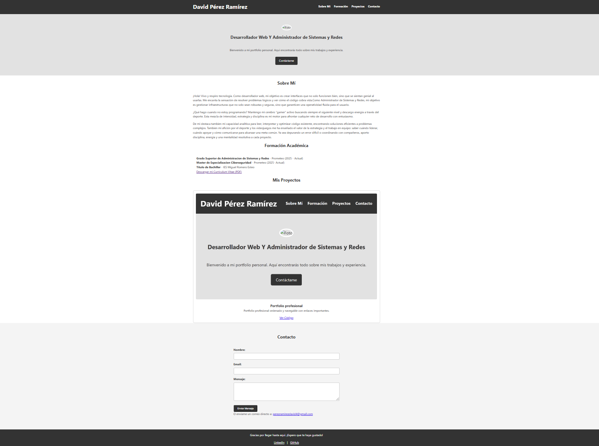
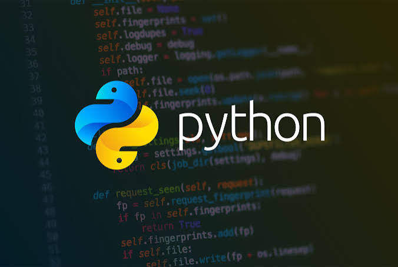
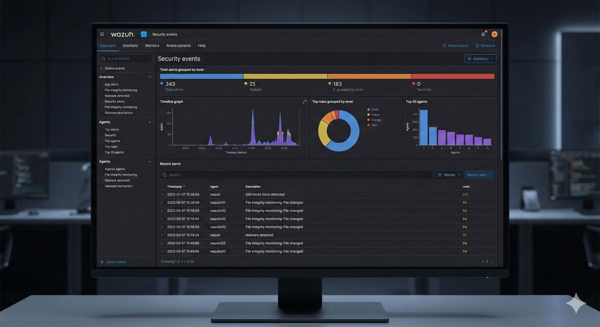

Portfolio Profesional
Diseño e implementación de un portfolio personal estático, totalmente responsive, optimizado mediante HTML semántico y CSS moderno.
Ver CódigoBienvenido a mi portfolio personal. Aquí encontrarás todo sobre mis trabajos, experiencia e infraestructura.
Contáctame"¡Hola! Soy un profesional de la tecnología especializado en la Administración de Sistemas, Redes y Ciberseguridad. Mi objetivo diario es diseñar arquitecturas seguras y garantizar una operatividad impecable, ya sea configurando servidores corporativos, gestionando directorios activos o implementando centros de operaciones de seguridad.
Sin embargo, mi perfil no termina en la infraestructura. Cuento con sólidas bases en desarrollo y maquetación web. Esta combinación me permite hablar el idioma de los desarrolladores y entender el ciclo de vida completo de un proyecto: desde que se escribe la primera línea de código hasta que se despliega de forma segura en un servidor.
Me considero una persona resolutiva, acostumbrada a leer, interpretar y auditar sistemas complejos para encontrar la solución más eficiente. Esta mentalidad táctica y orientada al detalle me acompaña siempre, ya sea ajustando el hardware de un equipo al máximo rendimiento, coordinando estrategias en equipo o manteniendo la disciplina en mis entrenamientos diarios. Aporto energía, enfoque y seguridad a cada proyecto en el que me involucro."

Diseño e implementación de un portfolio personal estático, totalmente responsive, optimizado mediante HTML semántico y CSS moderno.
Ver Código
Demostracion de manejo en Python
Ver Código
Demostracion de manejo en Javascript
Ver Código
Implementación de un centro de operaciones de seguridad para monitorización de eventos y detección de amenazas. (En proceso)